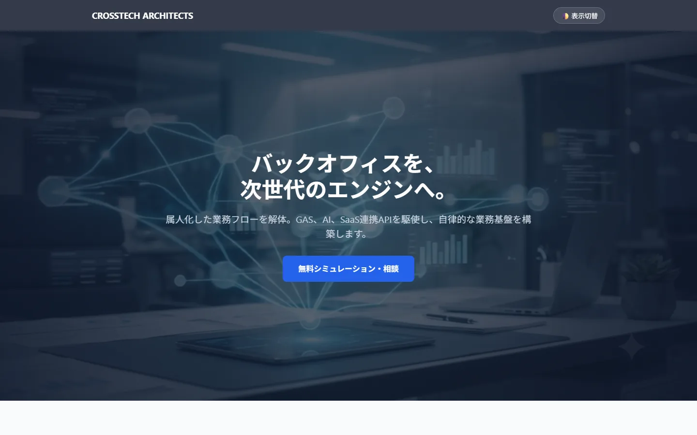
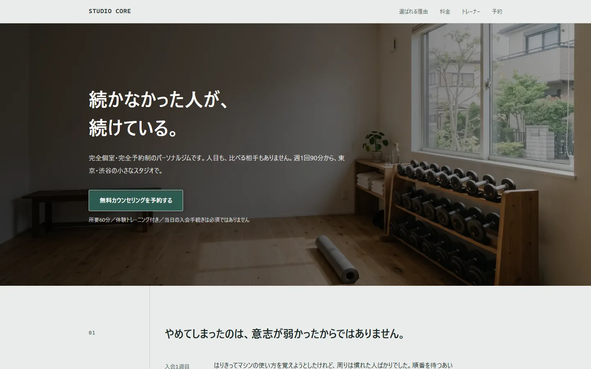

Case 1 — 商業施設の出店テナント調査リスト
- 課題
- イベント協業の候補先を探すため、施設ごとの入居店舗を横断で集める必要があった
- やったこと
- 対象施設の店舗情報を収集し、項目を揃えたスプレッドシートに整形して納品
- 結果
- 納期内に検収完了。発注者から満足の評価を受領
通信インフラの構築現場で8年、プロジェクトリーダーとしてシステム導入と運用の自動化をやってきました。その手法を、そのまま中小規模の業務に持ち込みます。スプレッドシートの転記、メールの仕分け、集計と通知——動かし続ける前提で組みます。
自動化後
平日夜間と土日で対応しています。やり取りはチャットのみ、通話・訪問は行いません。
Google Apps Scriptを中心に、いま人がやっている手順をそのまま置き換えます。動かしたあとに壊れないよう、エラー時の通知と復旧手順まで含めて納品します。
大規模なアカウント／端末管理で使ってきた運用設計を、そのまま縮小して提供します。組織の作り方と権限の切り方を最初に決めておくと、後の事故がほぼなくなります。
見た目だけでなく、送信された内容がどこに溜まって誰に届くかまで作ります。サーバー不要の構成にして、運用費をかけずに保守できる形で渡します。
中小企業向けの業務自動化コンサルを想定したBtoBサイト。導入効果を試算するスライダーと、サーバーを使わないフォーム送信を実装しています。
見どころ: ROIシミュレーター / Google Apps Script連携フォーム / ダークモード

パーソナルジムを題材にした、申し込み導線重視のBtoC向けLP。空き枠の表示から申し込み完了までを1画面で完結させています。
見どころ: 予約フォームの空き枠連携 / 表示速度 / 計測イベント設計

Google Apps Script / JavaScript (ES6+) / HTML5 / CSS3 / Python / Google Sheets API / Directory API / 各種LLM API
Google Workspace管理 / ネットワーク構築 / 資産管理 / プロジェクト管理（PL歴8年）
Tableau Data Saber / CompTIA Project+ / Microsoft Azure Fundamentals (AZ-900) / 工事担任者 AI・DD総合種 / 電気通信工事施工管理 / ビジネス統計スペシャリスト（エクセル分析 上級）/ 日商簿記2級
現在の手順を、実際の画面やファイルで見せてください。文章の説明より速く正確に把握できます。
できること・できないこと・想定作業時間をこちらから提示します。ここで折り合わなければ辞退します。
進捗は区切りごとにチャットで共有します。動くものを早めに見せる進め方をとります。
実データで動かして確認していただきます。修正はこの段階に含みます。
操作手順と、壊れたときの対処をドキュメントで渡します。
何を自動化できるか決まっていない段階でも構いません。いまの手順を見せていただければ、そもそも自動化すべきかどうかから一緒に判断します。
平日夜間・土日に対応します。チャットでのやり取りのみです。